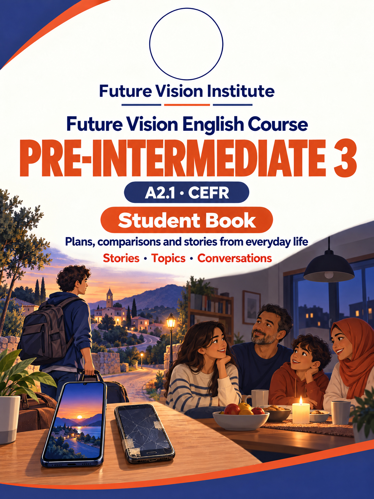

Adam's family has big plans for Eid. Read the plan, then read what really happened.
Next week is Eid. Adam's family is going to travel to his grandfather's village. It is a small village near the Nile, about three hours from Khartoum.
They are going to take the bus early in the morning. Tonight, Adam's mother is going to bake Eid cookies, and his father is going to buy new clothes for the children. Adam is going to wear a new white shirt.
In the village, they are going to visit all their uncles, aunts, and cousins. Adam's grandfather is going to sit under the big tree and tell old stories, and the children are going to play football by the river.
But there is one problem. Adam's little brother, Hamza, is very excited. "I'm going to eat one hundred cookies!" he says. His mother laughs. "You aren't going to eat one hundred, Hamza. You are going to eat two!"
Last week was Eid. My family traveled to my grandfather's village near the Nile. We took the bus early in the morning, and the trip was three hours long.
The night before, my mother baked Eid cookies, and my father bought new clothes for us. I wore a new white shirt.
In the village, we visited all our uncles, aunts, and cousins. My grandfather sat under the big tree and told old stories, and we played football by the river.
And Hamza? He ate two cookies, then three, then ten! My mother wasn't happy, but Hamza was!
We use it for plans, things we decided to do in the future. After the plan happens, we use the past simple.
The big holidays of the year, what people do, and this year's plans.
Sudan has many holidays. The two biggest are Eid al-Fitr and Eid al-Adha. Eid al-Fitr comes at the end of Ramadan, the month of fasting. Eid al-Adha comes about two months later.
On Eid, people wear new clothes, visit their families, and eat a lot of cookies and sweets. Children get money and gifts. Sudan also has Independence Day on January 1. On this day in 1956, Sudan became independent.
This year, Sara's family is going to celebrate Eid at home. Her mother is going to bake cookies, and her uncles are going to come for lunch. Omar is going to travel to Port Sudan to see his family. He is going to be on the bus for about twelve hours!
Talking about plans after the course
What are you going to do next?
— I'm going to take the next level.
Are you still going to be a pilot?
— Of course!
What about you?
Pilots need good English.
Definitely.
See you in the next level!
Omar wants a new phone. Which one is the best? Read the story, then read Omar's story of that day.
Omar's phone is old. It is slower than his friends' phones, and its camera is bad. "I need a new phone," he says. So on Saturday, he goes to the phone shop with Adam.
The seller shows them three phones. "This red phone is cheaper than the others, but it is smaller. This black phone is bigger, and its camera is better. And this gold phone is the most expensive. It is the fastest and the best phone in the shop."
Omar looks at the prices. The red phone is cheap, but the screen is too small. The black phone is nice, but it is more expensive than his plan. The gold phone is the most beautiful, but it costs more than his money for three months!
Then Omar has an idea. He goes home, opens his old phone, and changes the battery and the screen. Now it is faster than before, and it works well. "Do you need a new phone?" Adam asks. Omar smiles. "No. My old phone is the best phone for me!"
My phone was old. It was slower than my friends' phones, and its camera was bad. So last Saturday, I went to the phone shop with Adam.
The seller showed us three phones. The red phone was cheaper than the others, but it was smaller. The black phone was bigger, and its camera was better. The gold phone was the most expensive. It was the fastest and the best phone in the shop.
But the red phone's screen was too small, the black phone was more expensive than my plan, and the gold phone cost more than my money for three months!
Then I had an idea. I went home, opened my old phone, and changed the battery and the screen. Now it is faster than before. My old phone is the best phone for me!
We use them to compare two things (cheaper than), or to say which one is first in a group (the cheapest).
Four cities, and what makes each one special.
Sudan is a big country with many cities. Khartoum is the capital. It is where the Blue Nile and the White Nile meet. Across the river is Omdurman, the biggest city in Sudan.
Port Sudan is on the Red Sea, about twelve hours from Khartoum by bus. It is hotter and more humid than Khartoum in summer, and it has the busiest port in the country.
Kassala is in the east, near the mountains. Many people think it is the most beautiful city in Sudan. It is famous for its green gardens and its fruit, like bananas and oranges.
Which city is the best? Every city is different, and every city has something special.
Buying clothes and comparing them
I'm looking for a shirt.
Do you have a bigger size?
— Here's a large.
Try it on.
It's more expensive than the white one.
The blue one looks better on you.
I'm going to take the blue one.
Guests are coming for tea, and the kitchen is almost empty. Read the story, then read Sara's story of that day.
It is Friday, and Sara's family is waiting for guests. Her aunt and uncle are coming for tea at five o'clock, with their four children. Sara's mother looks in the kitchen. "Is there any sugar?" she asks.
Sara opens the cupboard. "There is some sugar, but not much. There isn't any milk. And there aren't many cups. We have only six!" Her mother is worried. "We need a lot of things!"
So Sara takes her bag and goes to the shop. She buys a lot of sugar, two bottles of milk, some bread, and ten paper cups. Then she buys some cookies for the children. She looks in her bag. "How much money do I have now? Not much!"
At five o'clock, the guests arrive. Everybody drinks tea with a lot of sugar, and the children eat all the cookies. "There aren't any cookies left!" Lina says. Sara laughs. "Next time, I'm going to buy more!"
Last Friday, my aunt and uncle came for tea at five o'clock, with their four children. My mother looked in the kitchen. "Is there any sugar?" she asked.
I opened the cupboard. There was some sugar, but not much. There wasn't any milk, and there weren't many cups. We had only six! "We need a lot of things!" my mother said.
So I went to the shop. I bought a lot of sugar, two bottles of milk, some bread, ten paper cups, and some cookies for the children. After that, I didn't have much money!
At five o'clock, the guests arrived. Everybody drank tea with a lot of sugar, and the children ate all the cookies. "There aren't any cookies left!" Lina said. Next time, I'm going to buy more!
Some things we can count, like cups and cookies. Some things we can't count, like sugar, milk, and money.
The rooms of a home, the things in them, and where they are.
This is Sara's home. It has a living room, a kitchen, a bathroom, and three bedrooms. There is also a small garden with some trees.
In the living room, there is a big sofa and some chairs. The TV is on a table between the two windows. There aren't any pictures on the walls, but there are a lot of family photos on a shelf.
In Sara's bedroom, there is a bed, a desk, and a closet. Her books are on the desk, and her shoes are under the bed. Her phone is next to her bed, of course!
How many rooms are there in your home? What is in your bedroom?
Ordering food on the phone
Can I order some food for delivery?
— Of course.
Two chicken sandwiches and some fries, please.
How many sandwiches?
— Four.
Any drinks?
— Some juice, please.
How much is it?
— Twelve thousand pounds.
How long is it going to take?
— About thirty minutes.
Last night, everyone at Adam's home was busy. Then the lights went out. Read the story, then read it again as it happens.
Last night at eight o'clock, Adam's family was at home, and everybody was doing something. Adam was studying for his English test in his room. His mother was cooking dinner, and his father was watching the news on TV.
Hamza and his brother were playing a game on the computer. Their sister was talking to her friend on the phone. And the cat was sleeping on the sofa.
Suddenly, the lights went out. The TV stopped, the computer stopped, and the fan stopped. It was dark and very hot. "Oh no!" said Hamza. "I was winning!"
Adam's father found a flashlight. While his mother was looking for candles, Adam went outside. All the neighbors were outside, too. They were sitting in the street and talking under the stars. Nobody was watching TV, and nobody was playing on a phone. "This is nice," Adam thought. "Maybe we need more nights like this!"
It's eight o'clock at night. I'm studying for my English test. My mother is cooking dinner, and my father is watching the news.
Hamza and my brother are playing a game on the computer. My sister is talking on the phone, and the cat is sleeping on the sofa.
Suddenly, the lights go out! It's dark and very hot. "Oh no!" says Hamza. "I was winning!"
While my mother is looking for candles, I go outside. All the neighbors are sitting in the street and talking under the stars. This is nice!
We use it for something that was happening at a time in the past, often when something short happened.
Adam's father drives a bus. This is his day, and one strange day.
Adam's father, Mr. Hassan, is a bus driver. He drives the green bus from the bus station to the big market.
His day starts early. He wakes up at five o'clock, and he starts work at six. He drives the same road ten times a day. He knows many of his passengers, and they always say hello. At seven in the evening, he goes home, tired but happy.
His job is not easy. The roads are busy, the summer is very hot, and he can't stop for lunch when he wants. But he likes his job, because he helps people every day.
Last Tuesday was a strange day. Mr. Hassan was driving near the hospital when a woman stood up. "Please stop!" she said. "My son is sick!" He drove them to the hospital door. A week later, the woman came to the bus station with a big box of cookies for him.
Coming in late, saying sorry, and good manners in class
May I come in?
— Yes, come in.
I'm sorry I'm late.
I was waiting for the bus when it broke down.
Can I borrow a pen, please?
— Here you are.
Please sit down quietly.
Try to leave home earlier.